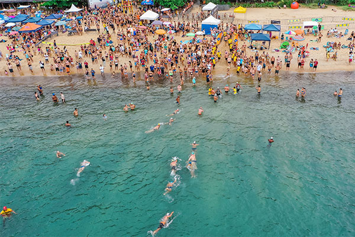

Culture
Culture
The Soul of Marrakech: A Walk Through the Medina
Lose yourself in the labyrinthine alleys of Marrakech, where every turn reveals a story etched in tile and spice.
Read story →Stories from the road, captured in words and light. ROAMLOG is a travel journal for those who wander not to escape life, but to find it.

Recent dispatches from the road, handpicked for the curious traveler.
Culture
Lose yourself in the labyrinthine alleys of Marrakech, where every turn reveals a story etched in tile and spice.
Read story → Adventure
Adventure
Seven days above the treeline, from the Eiger's shadow to the Matterhorn's gaze — an alpine traverse to remember.
Read story →
CoastalFrom the limestone karsts of Lan Ha Bay to the sand dunes of Mui Ne, Vietnam's coastline is a tapestry of wonder.
Read story →

The world is a book, and those who do not travel read only one page.Every journey begins with a single step
A curated guide to places that left a mark on our map and our hearts.